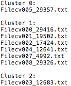

| Overview |
| The K-means clustering plugin (MacQueen, 1967) aims to cluster texts into a user-specified number of clusters (or groups) such that the texts included in each cluster are the nearest to the cluster's centroid (the prototypical document of that cluster), and have the farthest distance from other clusters' centroids. Once this optimization is performed, TACIT outputs a .csv file containing the membership information for the documents in the corpus. |
| Basic Tutorial: Using TACIT K-Means Clustering Tool |
| Specifying Input Files for Analysis | All input data files must be in .txt file format or compiled as a part of a TACIT corpus to be compatible with TACIT. See the Corpus Management Help Section if you need to convert files to compatible formats or create a corpus.
To specify which files you would like to analyze, select Add Corpus,Add Corpus Class, Add Folder, or Add File(s) under the Input panel. All files, folders, and corpora added to the input panel are automatically selected to be included in analysis by the check mark box to the left of the corpus/file/folder name. The number of files selected for analysis is indicated at the bottom of the input panel. To de-select an unwanted folder, file, or corpus class uncheck the box next to its name. To remove a file completely from the program list, click on the file name to highlight it, and then click the "Remove" button. Note: Files within folders/corpora cannot be removed from the tool without removing the entire folder or corpus, but de-selecting files using the check boxes will remove them from analysis. Add Corpus: The Add Corpus button will allow you to add a stored corpus from Corpus Management and all included classes and files for analysis. To expand the corpus and view the classes included, click on the arrow to the left of the corpus name in the input panel. Add Corpus Class: The Add Corpus Class button will allow you to add a single class from a corpus instead of the full corpus. Filter Corpus: For corpora with pre-determined attributes that have not been pre-sorted into classes, you can also analyze a subset of a corpus by clicking on the Filter Corpus button. Filter Corpus allows you to restrict the analysis to only those texts in your corpus that meet certain specifications. For example if you have a JSON corpus with an attribute specifying author age, you you can indicate that you only want authors that are older than 60 by clicking on the Filter Corpus button, selecting the age attribute, selecting the ">" function and entering 60 in the text box. In the same way, if you want to filter for posts by specific authors, the filter function can be used with the "=" sign and you can enter a string variable (such as author name) into the text box. Add Folder: The Add Folder button will allow you to add a folder and all included subfolders and files for analysis. To expand the folder and view the subfolders/files included, click on the arrow to the left of the folder name in the input panel. Add File(s): The Add Files button will allow you to add .txt files to be included for analysis. Multiple files within the same folder can be selected at the same time using standard multi-select functions. |
| Additional Input Parameters |
| In addition to selecting files for analysis, users must specify the number of clusters into which the corpus will separated.
This parameter can be be set within the Output Path field within the K-Means tool.
|
| Additional Options |
| Preprocess |
| Specifying Output Path |
| To specify an output folder where the output files will be saved, click on the Browse button to the right of the Output Location bar and select a folder.
If you create a new folder within this menu and change its name from "New Folder", click on any other folder and then click back on your newly created & renamed folder to select it.
After specifying all parameters, click the green and white play button (Image 1) located in the top right corner of the window to run the program. Output information will display in the console panel at the bottom of the tool.
Image 1. Run button location 
|
| Understanding K-Means Clustering Output |
|
The K-Means Cluster tool automatically generates two output files in .txt format, a run report and the cluster structure.
The file name includes the type of technique used for analysis and the time stamp for when the analysis was completed.
The cluster structure report (see Image 2 for example) lists each cluster and the documents that comprise them. For example, Image 2. shows the results of analysis of 8 documents that were separated into 3 clusters. As the report indicates, most (6) of the documents are contained in the 2nd cluster and two documents each formed singleton clusters. Image 2. K-Means Output Example  |